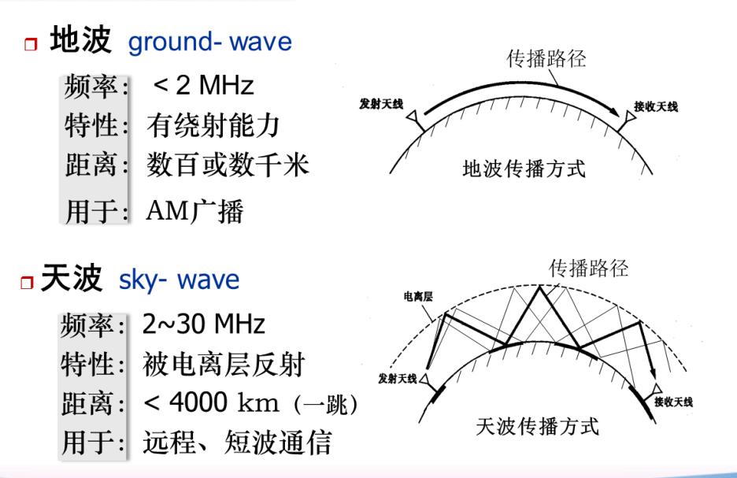
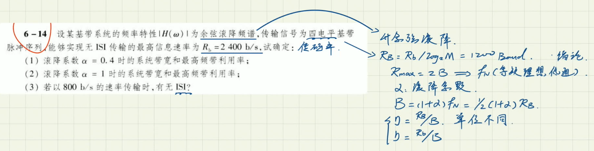

本文最后更新于：几秒前
1 前言
水一篇博客
记录一下通信原理实验过程中的东西，后面复习方便查一些概念。
2 【第四章】信道 √
2.1 信道分类
信道的定义：一种物理媒质，用来将来自发送设备的信号传送到接收端信道的分类：
- 有线信道、无线信道
- 广义信道、狭义信道
- 按照系统结构出发：调制信道、编码信道
2.1.1 无线信道
电磁波在自由空间所经历的传播路径

2.1.2 有线信道
2.1.3 调制信道
若按照调制信道出发，信道可分为恒参信道、随参信道
eo(t)=k(t)ei(t)+n(t)
上式为调制信道的一般数学模型，一般来说 k(t) 可以看作是对信号的一种干扰，并且很多的失真都可能随着时间变化，所以 k(t) 只能用随机过程表述，因此这种特性随机变化的信道称为随机参量信道，也就是随参信道。若特性基本不随时间变化，或变化极小，则称为恒参信道。
2.1.4 编码信道
编码信道的输入输出为数字序列，若关注于输入输出，则可以用转移概率来描述编码信道的特性。则误码率为
Pe=P(0)P(1/0)+P(1)P(0/1)
2.2 噪声
2.3 信道容量（计算题）
信道容量的定义：无差错传输时的最大平均信息速率
香农公式：
C=Blog2(1+NS)
例题：
2.4 作业
作业题：
2.5 理解
3 【第六章】数字基带传播系统
3.1 （实验部分）基带传输的常用码型
3.1.1 基本码型图像
根据单极性 / 双极性 | 归零 / 不归零排列组合可以组出四种基本码型，示例如下：
对于给定的二进制信息：
x = [1 1 1 1 1 0 0 1 1 0 1 0 0 1 0 0 0 0 1 0 1 0 1 1 1 0 1 1 0 0 0];
四种基本码型图像如下：

四种码型各自的一些特点：
- 单极性不归零：极性单一，有直流分量，简单常用
- 双极性不归零：回复信号的判决电平为 0，不受信道特性变化影响，抗干扰，利于传输
- 单极性归零：可以直接提取定时信息，其他波形提取定时信号的时候采取的过渡波形
- 双极性归零：肯定也可以提取定时信息，别的特点老师没说
3.1.2 基本码型功率谱密度
Q: 功率谱密度有什么用？
A: 功率谱密度可以用来描述信号功率在频率上是如何分布的，能够表示一个信号在不同频率上的功率强度。
Q: 单位是什么？
A: 功率 / Hz 或者 dB / Hz ，表示频率单位上的平均功率。
Q: 怎么看功率谱密度图像？
A：
- 频率成分：功率谱密度图像可以显示出码序列中存在的频率成分。在图像中，我们可以观察到不同频率上的功率峰值或者功率分布情况。这些峰值或分布可以表示码序列中的频率成分，帮助我们了解信号的频率特性。
- 噪声特性：功率谱密度图像还可以反映码序列中的噪声特性。噪声通常表现为在不同频率上的功率分布，可以通过功率谱密度图像来观察和分析。例如，如果在图像中存在较高的功率峰值或者功率分布，可能表示码序列中存在噪声成分。
- 频带利用率：功率谱密度图像可以帮助我们了解码序列的频带利用率。频带利用率表示信号在频域上占据的带宽比例。通过观察功率谱密度图像中的功率分布情况，我们可以估计码序列在频域上的带宽利用情况。
3.2 数字基带信号的特性
常用传输码型：
- AMI 码
- HDB3 码
3.3 消除码间串扰
3.4 提高抗噪性能
3.5 眼图
3.6 改善系统性能
3.7 作业
稳态波和交变波的功率谱叠加后的总公式：
Ps(f)=Pν(f)+Pu(f)
=
m=−∞∑∞∣fB[PG1(mfB)+(1−P)G2(mfB)]∣2δ(f−mfB)(稳态波部分)
+
fBP(1−P)G1(f)−G2(f)2(交变波部分)
等概所以：
P=1/2
三角脉冲所以：
G2 零码直接为 0 所以带入公式后有：
Ps(f)=fBP(1−P)G(f)2+−∞∑∞fB(1−P)G(mfB)2δ(f−mfB)=4fB4A2TB2Sa4(2πfTB)+−∞∑∞2fBG(mfB)2δ(f−mfB)=16A2TBSa4(2πfTB)+16A2−∞∑∞Sa4(2mπ)δ(f−mfB)

4 【第七章】数字调制
4.1 2ASK
4.2 2FSK
4.3 2PSK/2DPSK
4.4 抗噪性能，误码率
4.5 作业
5 【第十章】信源编码
5.1 抽样过程
5.2 量化过程
5.3 PCM编译码过程
5.4 TDM 原理和 E1 帧结构
5.5 作业
6 【第十三章】同步
6.1 载波同步
6.2 位同步
6.3 群同步
6.4 作业